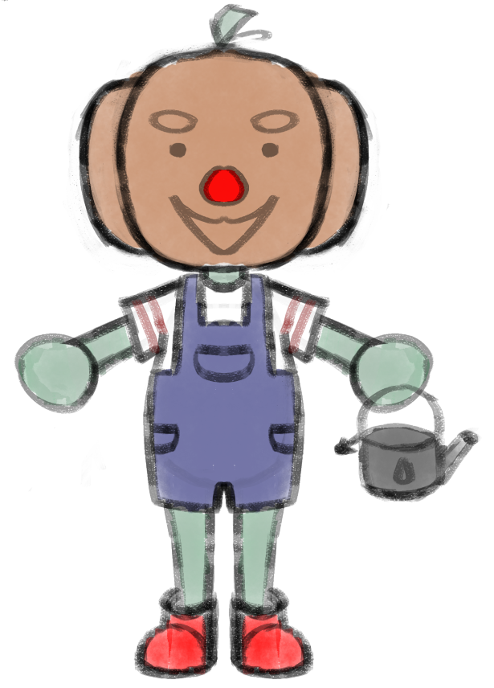
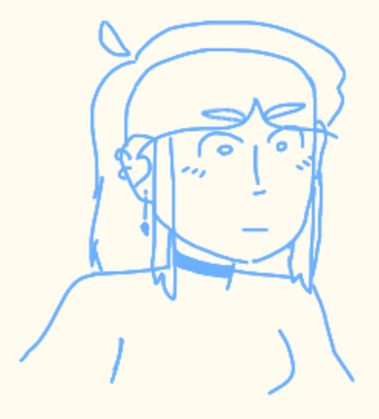
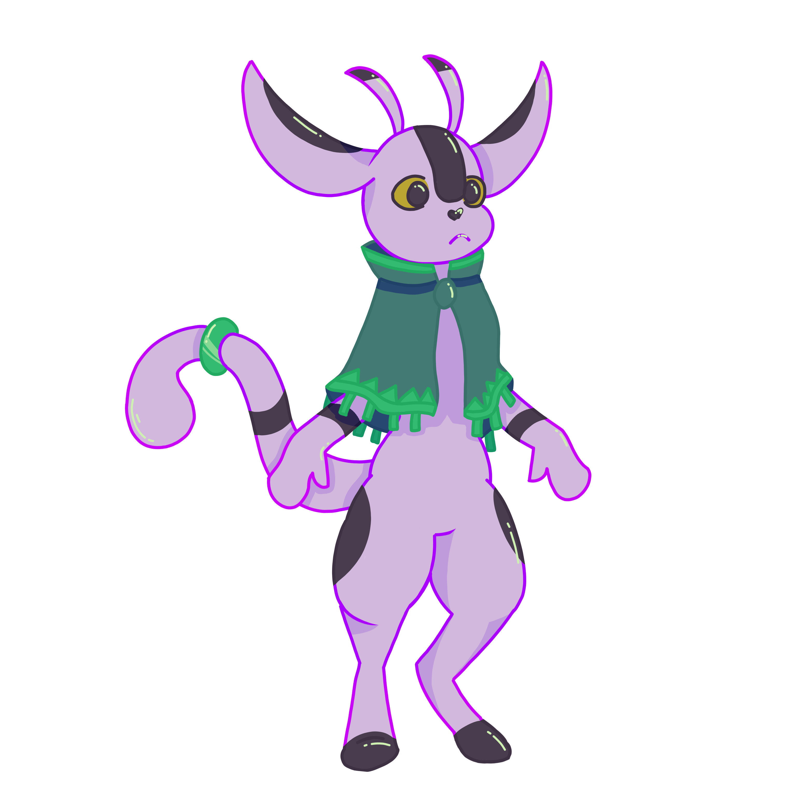
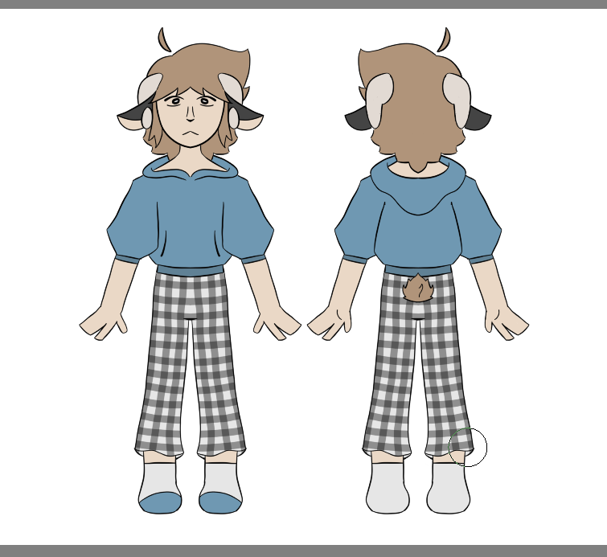

What services are offered?
The services that I provide are art comissions as well as 2D model rigging

Sketches
Sketches are the cheapest commissions I offer and the fastest to recieve.
These comissions usually only take a few hours to a day for me to complete depending on the complexity and detail wanted on the character.
All commissions that are in flat color or full render have a sketch phase as this is where the commissioner is allowed to ask for changes to the commission.

Headshot
Headshot commissions come in two different styles: flat color or render. Though flat color is usually reccomended due to the small nature of the image.
Headshot commissions are usually used as profile pictures for social media websites such as Instagram, Facebook, or YouTube.
These types of commissions don't tend to have a lot of detail depending on the intended use case as too much detail for a profile picture makes them hard to understand.
Headshot body commissions come in:
- flat color
- full render

Bust-up/half body
Bust-up/half body commissions can come in three different styles: a sketch, flat color, or render.
These types of commissions usually take a day or two to complete.
Bust-up/half body tend to be some commissions that have a decent amount of detail as they give a mid view of the whole character compared to other commissions.
Bust-up/half body commissions come in:
- sketches
- flat color
- full render

Fullbody
Fullbody commissions can come in three different styles: a sketch, flat color, or render.
These types of commissions usually take a day or two to complete.
Fullbody tend to be some commissions that have a decent amount of detail as they give a mid view of the whole character compared to other commissions.
Fullbody commissions come in:
- sketches
- flat color
- full render

Vtuber
Vtuber commissions come in two different styles: flat color or render.
These commissions are the longest and usually take two to five months to complete depending on the complexity of the model.
Vtubers are the most detailed commissions and have the most detail as well as hundreds of layers to be able to function properly as a model.
Vtuber commissions come in:
- flat color
- full render
Rigging
Vtuber models can also be rigged into fully functioning models although this adds onto the price as well as the time to complete the commission.